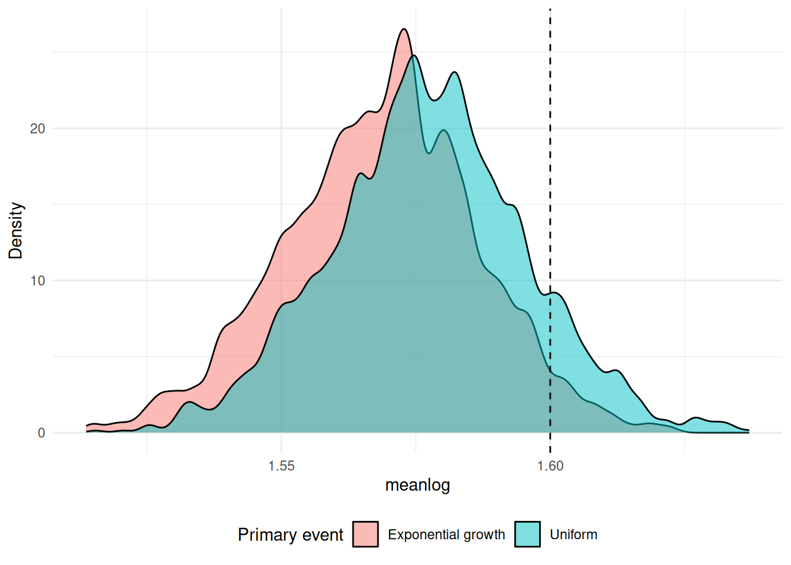
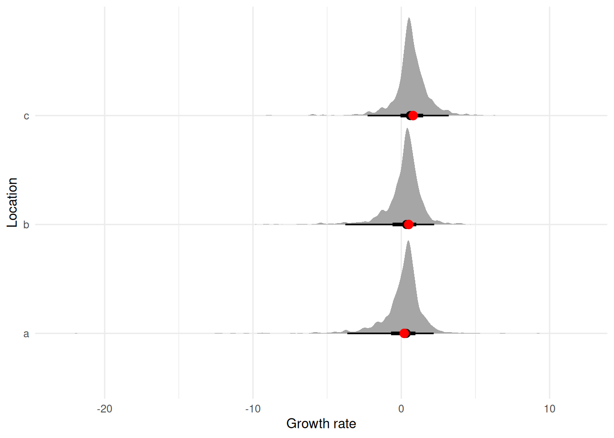

1 Background
An event reported on a date could have happened at any point that day.
Models in epidist need an assumption about where, which we call the primary event distribution.
The default assumes it is equally likely at any point in the window. That holds when incidence is flat. It does not when incidence is growing or shrinking quickly. The event is then more likely towards one end of the window, and ignoring that biases the delay estimate (Charniga et al. 2024).
The primary event distributions come from primarycensored (Abbott et al. 2025).
vignette("model") gives the mathematical treatment.
2 Simulating from a growing epidemic
simulate_exponential_cases() draws primary events from an exponentially growing epidemic at rate r.
Here we use a rate of 0.5 and a lognormal delay.
Both events are then censored to daily windows.
set.seed(101)
meanlog <- 1.6
sdlog <- 0.4
growth_rate <- 0.5
obs <- simulate_exponential_cases(r = growth_rate, sample_size = 500) |>
simulate_secondary(meanlog = meanlog, sdlog = sdlog) |>
simulate_dates(outbreak_start_date = as.Date("2024-01-01"))
linelist <- as_epidist_linelist_data(obs)3 Uniform against exponential growth
The marginal model takes the primary event distribution when the data are converted.
uniform <- as_epidist_marginal_model(linelist)
growing <- as_epidist_marginal_model(linelist, primary = "expgrowth")With primary = "expgrowth" the growth rate becomes a distributional parameter called pgrowth.
It takes a formula and a prior in the same way as mu and sigma.
The delays carry little information about the growth rate, so the prior does the work. Epidemic growth is normally estimated separately, from case counts over the same period. That estimate is then passed here as an informative prior centred on it, which is the approach taken in Brand et al. (2026). The prior below is centred on the rate used to simulate.
fit_uniform <- epidist(
uniform,
chains = 2, cores = 2, refresh = 0, silent = 2
)
fit_growing <- epidist(
growing,
formula = bf(mu ~ 1, pgrowth ~ 1),
prior = prior(normal(0.5, 0.1), class = "Intercept", dpar = "pgrowth"),
chains = 2, cores = 2, refresh = 0, silent = 2
)The posterior for the rate stays close to the prior, which is expected.
summary(fit_growing)$fixed[
"pgrowth_Intercept", c("Estimate", "l-95% CI", "u-95% CI")
]
#> Estimate l-95% CI u-95% CI
#> pgrowth_Intercept 0.5043456 0.3130026 0.7013424Both are compared against the delay used to simulate.
uniform_draws <- ungroup(delay_parameter_draws(fit_uniform))
growing_draws <- ungroup(delay_parameter_draws(fit_growing))
draws <- bind_rows(
mutate(uniform_draws, model = "Uniform"),
mutate(growing_draws, model = "Exponential growth")
)
draws |>
ggplot(aes(x = mu, fill = model)) +
geom_density(alpha = 0.5) +
geom_vline(xintercept = meanlog, linetype = "dashed") +
labs(x = "meanlog", y = "Density", fill = "Primary event") +
theme_minimal() +
theme(legend.position = "bottom")
4 A growth rate that varies
pgrowth takes a formula, so the rate can vary.
Here each location has its own rate, drawn around the shared value.
locations <- c(a = 0.2, b = 0.5, c = 0.8)
by_location <- purrr::imap(locations, function(r, location) {
sim <- simulate_exponential_cases(r = r, sample_size = 300, seed = 1) |>
simulate_secondary(meanlog = meanlog, sdlog = sdlog) |>
simulate_dates(outbreak_start_date = as.Date("2024-01-01"))
return(mutate(sim, location = location))
})
by_location <- bind_rows(by_location)
linelist_locations <- as_epidist_linelist_data(by_location)A random effect on pgrowth lets the rate differ by location while sharing information across them.
The marginal model is used here.
The latent model samples an event time per observation and would be slow at this size.
marginal_locations <- as_epidist_marginal_model(
linelist_locations,
primary = "expgrowth"
)
fit_locations <- epidist(
marginal_locations,
formula = bf(mu ~ 1, pgrowth ~ 1 + (1 | location)),
prior = prior(normal(0.5, 0.2), class = "Intercept", dpar = "pgrowth"),
chains = 2, cores = 2, refresh = 0, silent = 2
)Here the prior is shared across locations and the random effect lets each depart from it.
# epidist_newdata() adds the observation process columns the marginal model
# needs (pwindow, swindow, relative_obs_time, delay_min) alongside location.
newdata <- epidist_newdata(marginal_locations, location = names(locations))
epred <- tidybayes::add_epred_draws(newdata, fit_locations, dpar = "pgrowth")
epred |>
ggplot(aes(x = pgrowth, y = location)) +
tidybayes::stat_halfeye() +
geom_point(
data = tibble(location = names(locations), pgrowth = locations),
colour = "red", size = 3
) +
labs(x = "Growth rate", y = "Location") +
theme_minimal()